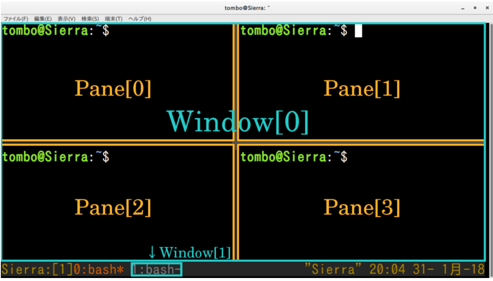

夫大人者，与天地合其德，与日月合其明，与四时合其序，与鬼神合其吉凶。（《周易·䷀乾·文言》）
夫大人者，与天地合其德，与日月合其明，与四时合其序，与鬼神合其吉凶。（《周易·䷀乾·文言》）
iTerm2 VS Tmux
- iTerm是一个GUI软件，它的窗格只是窗格而已;
- Tmux是终端复用，在一个命令行窗口中不仅可以显示多个Shell的内容，而且可以保持多个会话;
- Tmux和Vim一样属于字符终端软件，不需要任何GUI的支持，在远程登录时尤其有用
tmux (opens new window) 是linux中一种管理窗口的程序，它提供了一个Session随时存储和恢复的功能。

tmux 包括会话 session、窗口 window、面板 pane三个角色，依次为包含关系。
安装
brew install tmux # OSX |
基本使用
session
# 新建会话 |
问题
- 新建session： work & centos;
- 进入work,
- 切换到centos
# 实现 |
window
在 Tmux 中，按下 Tmux 前缀 ctrl+b，然后：
# window |
pane
# pane |
杂项
d 退出 tmux（tmux 仍在后台运行） |
注意事项
- 鼠标滚轮
问题：当满屏幕数据的时候，无法滚动查看
1. 进入命令行=》 ctrl+b : |
更多命令请参考如下列表
参考
优雅地使用命令行：Tmux 终端复用
十分钟学会 tmux
Tmux 使用教程
向军大叔-tmux
Tmux 快捷键 & 速查表 & 简明教程